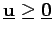
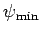
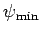

Inhalt Index DeskTop Bronstein

 Optimierung Nichtlineare Optimierung Lösungsverfahren für quadratische Optimierungsaufgaben Verfahren von Hildreth-d'Esopo
Optimierung Nichtlineare Optimierung Lösungsverfahren für quadratische Optimierungsaufgaben Verfahren von Hildreth-d'Esopo


Das duale Problem (18.63a,b), das nur die Nebenbedingung  enthält, kann mit Hilfe des folgenden einfachen Iterationsverfahrens in Schritten gelöst werden:
Unter der Voraussetzung, daß ein  mit existiert, konvergiert die Folge gegen den Minimalwert  und die mittels (18.64) gebildete Folge
mit existiert, konvergiert die Folge gegen den Minimalwert  und die mittels (18.64) gebildete Folge  gegen die Lösung
gegen die Lösung  des Ausgangsproblems. Dagegen konvergiert die Folge nicht immer.
des Ausgangsproblems. Dagegen konvergiert die Folge nicht immer.
Zu weiteren Verfahren zur Lösung quadratischer Optimierungsprobleme siehe 18.10.